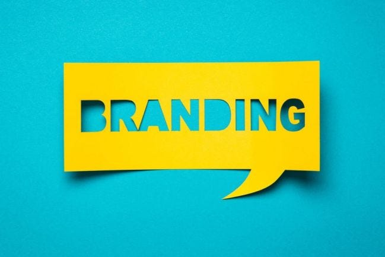
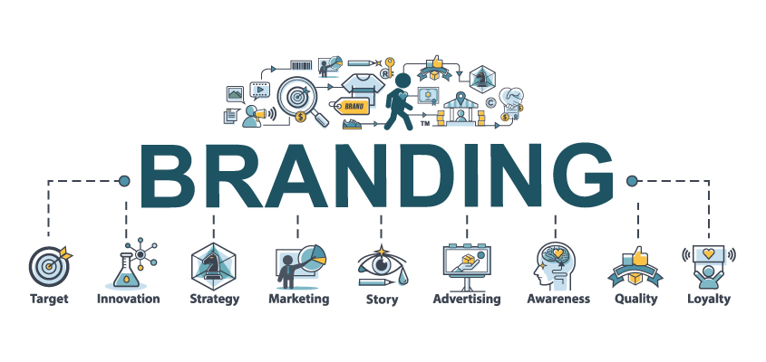
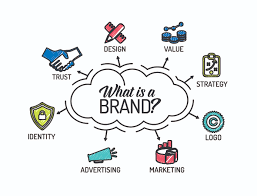

Could AI Build a Successful Brand from Scratch?
In today’s digital economy, a brand isn’t just a logo or a tagline, it’s a full identity, complete with a story, a tone, and a community. Traditionally, branding has been a human craft: part psychology, part design, part storytelling. But with AI now capable of designing logos, writing mission statements, and even generating brand names, we’re left with a fascinating question:
Could AI build a brand from scratch, and make it successful?
To find out, I gave AI the challenge of creating a brand from the ground up. I asked it to generate a name, design a logo (using an AI image generator), write a mission statement, define a target audience, and even draft a launch post for social media. Then, I compared the AI built brand to real startups and asked: Would anyone actually buy from this?
The Test: Letting AI Be the Brand Strategist
I used ChatGPT for strategy and copy, and an AI image generator for visual assets. The product? A sustainable direct to consumer cleaning product line, an industry where brand identity is everything. 
Brand Name & Mission Statement
Prompt: “Create a brand name and mission statement for a sustainable, eco-friendly home cleaning product.”
AI Response: Brand Name: Everpure Mission Statement: “At Everpure, we believe clean should never come at the planet’s expense. Our plant based products deliver powerful results without harmful chemicals, helping you protect your home and the Earth, one spray at a time.”
Verdict: Surprisingly solid. The name Everpure feels clean and premium. The mission hits all the right eco-conscious notes. A human might polish the language a bit more, but this is a strong start.
Logo Design
Using the AI generated name, I plugged “minimalist eco-friendly logo for Everpure cleaning products” into an image generator.
Result: A leaf based logo with soft curves and muted green tones. Visually aligned with eco brands like Method or Grove Collaborative.
Verdict: On brand and Instagram ready. While not groundbreaking, it looks professional and instantly communicates “clean and green.”
Audience and Brand Voice
Prompt: “Define the ideal target audience and describe the brand voice.”
AI Response: Audience: Environmentally conscious millennials and Gen Z homeowners, especially women aged 25–40, who value sustainability, design, and wellness. Voice: Clean, confident, and empowering—with a conversational tone that balances expertise with friendliness.
Verdict: This is very close to what real DTC brands target. The voice sounds like it could fit right in on a modern brand’s TikTok or Instagram feed.
Launch Day Instagram Post
Prompt: “Write a launch day Instagram post for Everpure that introduces the brand and encourages followers to shop.”
AI Response: We’re live! Meet Everpure, eco friendly home cleaning that’s tough on mess, gentle on the planet. - Plant-based ingredients - Refillable packaging - Designed with you (and Earth) in mind. - Join our clean revolution. Shop now & make every spray count. #EverpureClean
Verdict: It hits the right beats, but feels a little generic. A human marketer might add more personality or a founder’s story to drive authenticity.
Where AI Branding Works

Speed and Consistency In less than 30 minutes, AI delivered a complete brand package. Everything—from voice to visuals, was coherent, polished, and aligned.
Market Awareness AI pulls from existing brand language and trends, meaning it knows what “sounds right.” It mimics the best of what’s already out there.
Affordable for Early-Stage Founders For startups with no budget, AI offers a near-instant way to create a baseline identity, which can later be refined by human designers and marketers.
Where AI Branding Falls Short

Originality and Emotional Depth AI is great at remixing existing ideas, but not inventing new ones. The Everpure brand feels safe and familiar—but not bold or different.
Founder Story and Cultural Connection The best brands come with a story: a lived experience, a social mission, a spark of inspiration. AI can imitate that, but not truly feel it.
Iteration with Purpose AI can generate dozens of names or posts, but it doesn’t know which one will actually resonate. Human insight is still key for making strategic creative choices.
Final Thoughts: AI as Your Co-Founder? Could AI build a brand from scratch? Technically, yes. The tools are there. You could generate a name, logo, website, voice, and social presence, all in a single afternoon.
But could it build a successful brand from scratch?
That’s more complicated.
Brand success isn’t just about consistency or visuals, it’s about emotion, values, trust, and community. AI can help build the infrastructure of a brand, but it still needs human creativity to inject soul into the system. For now, the best brands will still be part bot, part human. 